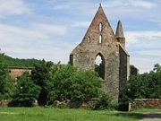
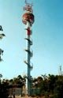

V poslední době jsem organizoval pár výletů do okolí s kamarády a protože se nám povedlo navštívit hezká místa, podělím se o svých pár tipů. Ale jak každý víme, tipy jsou v dnešní době jedna z nejdražších komodit – proto budu chtít na oplátku nějaké tipy od vás ;) . Mělo by jít o výlety do okolí Brna, ale když utipnete i něco vzdálenějšího, asi se nebudu zlobit :) .
K výkladu se vám budou hodit turistické mapy. Pokud nemáte rádi Mapy.cz, jsou u nás i jiné turistické mapy.
Rosa Coeli: sobota 14. 4. 2007
 Cílem válečné výpravy byl dávno vypleněný klášter Rosa Coeli v Dolních Kounicích. Jeli jsme vláčkem před Ivančice, kde jsme se po červené značce soukali směrem na Nové Bránice. Po cestě jsme chytli nějakou tu rozhledničku a hlavně Ivančický viadukt. V Dolních Kounicích jsme nasáli okultismus z kláštera a pomocí autobusové dopravy a MHD se snadno a za pár korun dostali zpět do Brna, přes Modřice.
Klášter opravdu stojí za to, je nádherný. Docela hodně informací je i na Wikipedii.
Veveří: sobota 21. 4. 2007
Takovou spíše Brněnskou klasikou by se dal nazvat výlet na hrad Veveří, který se nachází mezi Brnem a Veverskou Bitýškou, na břehu přehrady. Dali jsme si sraz v Brně na zastávce u ZOO a vydali se kolem hráze po západním břehu přehrady na cestu. Jestli se nechcete ztratit, koukejte se po žluté značce. Dovedla nás doprostřed Podkomorských lesů, kde jsme ji podvedli a vyměnili ji za modrou – ta vede přímo k hradu. Když budete mít štěstí jako my, narazíte tam třeba zrovna na Dny země či jiné slavnosti :) . Po prohlídce hradu jsme za koukání na lodičky přelezli lávku na druhou stranu přehrady. Chytli jsme se červené, která s námi obkroužila přehradu po té hezčí (turističtější) straně a dovedla nás zpět k hrázi, odkud to už jsme to pomocí MHD zase nějak domů zvládli.
Veveří je pěkný hrad a jeden z největších u nás. Určitě nedbejte na to, že jej dost poznamenala rušná historie a skoro nic na něm nenechala. Je to po Špilberku asi nejbližší hrad pro osazenstvo ze štatlu. Obejít si přehradu má samozřejmě také své kouzlo. Na konci cesty zaparkujte někde v přístavišti a dejte si pořádnou pizzu ;) .
Rozhledny: sobota 9. 2. 2008
Poslední výlet jsme absolvovali nedávno. Ještě je docela zima a všechna běžná místa jsou zavřená, takže jsem dostal od bráchy tip na rozhledny – ty jsou přístupné stále. Stačí se vybavit rukavicemi a bundami – výletní počasí až na tu zimu určitě je. Povedlo se nám chytit modrou oblohu a jarní sluníčko, takže bylo opravdu krásně. Vybral jsem dvě rozhledny v okolí Kuřimi – Babí lom a Čebínku.
 Dali jsme si sraz na královopolském nádraží a vyrazili na sever, podél kopečků do Mokré Hory. Tam už si nás odchytla červená značka a dopravila nás přímo k Babímu lomu nad Lelekovicemi. Odtud jsme se soukali po skalách do Kuřimi, nabrali proviant, část družiny nechali na nádraží a pokračovali dále do polí, směrem k Čebínu. Značky tam moc nejsou, ale stačí znát směr – Čebín je asi za dvěma kopci. Dávejte ale pozor a vyberte si ty správné kopce. Nevynechejte Malhostovickou pecku a přilehlé skalní útvary, protože jinak budete litovat jako já :) . Vyplazili jsme se na čebínský kopec a zdolali jeho 30m vysokou rozhlednu – ta stála opravdu za to a pokud máte například strach z výšek, ani se k ní nepřibližujte ;) . Na detailní průzkum zdejšího rozlehlého lomu už nebyl moc čas – stihli jsme ale poslední vlak před setměním. Železnice nás stála opět pár korun a trousili jsme se z ní podle toho, jaké nádraží nám vyhovovalo (Královo Pole, hlavní nádraží…).
Musí vám vyjít počasí. Nám vyšlo a viděli jsme všechno krásně. Nezapomeňte na teplé oblečení, rukavice apod. Vyjděte brzo ráno, protože se ještě brzo stmívá.
 Kindle
Kindle
{kind=link}